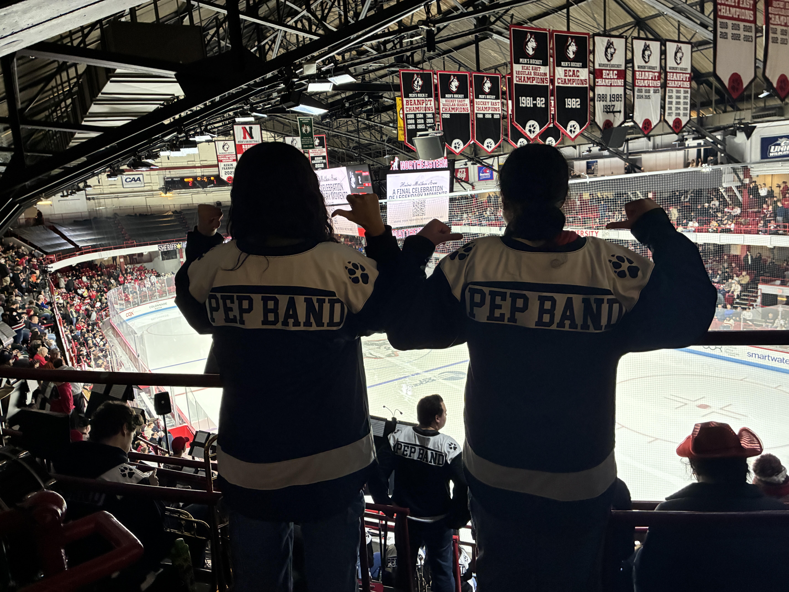

Music and Instruments

I have been playing instruments for the majority of my life, starting with the piano when I was seven. I was classically trained by several private tutors over the years and completed all six levels of the New York State School Music Association’s (NYSSMA) solo festival on the piano. I started learning the flute in the fifth grade through my elementary school’s concert band, and I continued playing throughout middle school and high school in the concert bands, jazz bands, and pit orchestra. I also briefly played the piccolo during my junior and senior year of high school.
After coming to Northeastern University, I joined the Northeastern Pep Band my freshman year and have joined every year since. The pep band performs at sporting events for Northeastern, specifically the home games for Women’s and Men’s Hockey, Women’s and Men’s Basketball, and Women’s Volleyball. The pep band also participates in tournaments like the Women’s and Men’s Basketball CAA Division finals, the Women’s and Men’s Hockey East finals, and the Beanpot tournament. Pep band is considered both a club and a class by Northeastern, so each semester spent in pep band gives one free credit. We have around 90 songs in our catalogue and are constantly adding new music to play at games.
Instruments I can play/How long I've played them
- Piano - 14 years
- Flute - 11 years
- Piccolo - 2 years